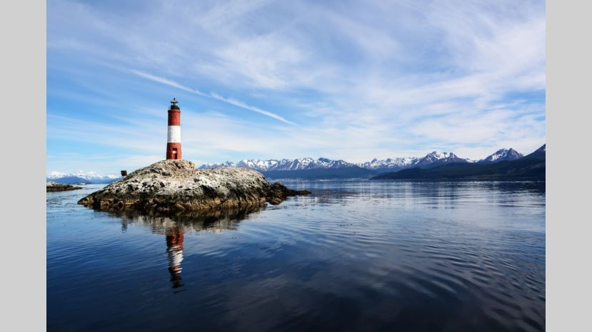

Tiera del Fuego
El lugar conocido como el Fin del Mundo, es tan fascinante y diverso como su nombre. El rincón mas austral del planeta es el lugar perfecto para conectarse con la naturaleza. Montañas, valles y frondosos bosques que se pierden en el horizonte hacen parte de este territorio que contrasta con el verde de la tierra y el azul del firmamento. Te recomendamos visitar Ushuaia, el lugar donde continúa un inolvidable viaje por estas tierras árticas cuya biodiversidad con pingüinos, lobos marinos, centollas, delfines y toninas, son algunas de las maravillosas especies que podrás ver en este paraíso helado.
